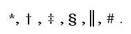
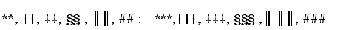

User requirements and current deficiencies
Last modified 2006 March 23
General requirements
OpenOffice needs -
- Enhancements to the bibliographic database and internal data structure; fields need to be able to handle larger texts eg multiple authors; the data structure need to be compatible to new standards; it needs to support more complex data structures such as a author table liked to bibliographic records.
- Provision for document style support, which includes page formatting and citation method and bibliographic formats. (eg MLA specifies page formatting and citation types for technical papers and student essays.)
- Build a method for building document style descriptions and importing and exporting these.
- Provide import and export facilities for bibliographic data in common formats.
- Support for the full range of common citation styles. In-text and footnote / endnote methods and Footnote symbols.
- A much better bibliographic data entry, edit, and browsing facilities. Similar to high-end commercial applications such as Endnote.
- Ability store and directly access bibliographic data on a database. Ability to interact with other bibliographic databases.
- Ability to directly query reference sources via the internet and add responses to bibliographic records.
Deficiencies needing correction
1. The Bibliographic referencing needs to support the
footnote citation style (commonly used in the Humanities, and particularly in
History) such as defined in the Chicago Manual of Style. Eg
------------
34. T.M. Charles-Edwards,"Honour and Status in Some Irish and Welsh Prose Tales.", Eriu, xxxvi, 1978.
Currently citation key is currently defined as fixed character string
called the ‘short name’ eg [DWILSON:2000] which the user enters when the
bibliographic reference is entered. The field selection and formatting
facility available for the bibliographic table (and other index and tables)
needs to be able to format the footnote citation string.
2a. There needs to provision for defining citations and references with
different treatment for first and subsequent uses of the citation. There is a
tedious and fault prone aspects of the footnote / endnote citation method -
the maintenance the Initial and Subsequent citations in the correct order as
one edits the text. It is not difficult when editing to move a piece of text
and have as result the Initial Citation reference coming after the Subsequent
reference.
2b.Then there is the issue of support for treating repeating footnote
references such as the use of - 24. ibid.
3a. Endnote citations are only partially supported. Citations can be marked
by numbers and this enables the use of the endnote method of citation. As the
Bibliographic table can function as the endnote citations placed at the end
of the chapter of the document. However the Chicago Manual of Style specifies
different formats for footnote / endnote citations and the bibliographic
table (citation use Initials & Surname, Bibliography Table uses Surname
& Initials). Currently only one format can be defined.
3b. There needs to be an option to place the endnotes an a user selectable location. Currently there are only two options availalbe at the end of the document or at the end of each section. The reason this needs to be make more flexable is that style manuals specify different locations. For example the formatting guidelines for APA and Chicago style submissions specify the following order for the sections in a document:
- APA Style
- title page
- abstract
- text
- references
- appendixes
- author note
- footnotes/endnotes
- tables
- figure captions
- figures
- Chicago Style (back matter)
- Appendix
- Endnotes
- Glossary
- Bibliography
- Index
- Colophon
See issue number 37679 for details.
4a. Chicago Manual of Style requires repeated author names in the Bibliographic Tables to be indicated by a three-em dash eg.
Dickens, Charles. A Tale of Two Cities (London:Penguin Books, 2000)
——— Nicholas Nickelby, (London: Penguin Books, 1956)
——— Oliver Twist, (New York, Random House,1965)
The bibliographic table generator should do this.
4b. Associated with bibliographic table generation is special sorting rules.
Provision needs to be made for these. (as so well discussed in D. E. Knuth.
Sorting and Searching. Example: how to sort ‘Mujahid Usamah Bin
Ladin’ ; ‘ bin ‘ is always ignored in sorting.)
Another sorting issue - When used to create a list of references for an
APA style paper, the references need to be sorted by (Author, Date) sequence,
which is straightforward enough, but references without an identifiable
author (such as a web page) need to be listed by the title of the article and
alphabatized in the list accordingly.
5. There is a need to support more that one document style. The current
facilities support only one document style. The table definitions for
bibliographic table can be manually modified to support a particular citation
style. But the modified style can not be save, or selected. (Saving the
document table formats as templates is possible, but this is not the most
convenient way of dealing with citation styles.)
6. There should be provision for Footnote symbols. The Chicago Manual of
Style stipulates that when Endnotes and Footnotes are both used, the Endnotes
are consecutively numbered (1,2,3 ...) and the footnotes referenced by
symbols. The series they suggest are -
|  |
As more symbols are needed they are doubled and trebled - |
|  |
6a. At present there are two loosely coupled bibliographic facilities. One is
the old StarOffice 5.2 Bibliographic database (dbase format) It has a simple
reference insertion process. When an database bibliographic entry is dragged
onto a document, a dialog box opens which allows the fields required for the
entry to be selected. This process can be configured for only one citation
format in one citation style - eg book reference for MLA - and it does not
support character formatting of fields, such as italic or underlining.
6b. The other facility in new in OpenOffice. It stores bibliographic data
within the document. The data is entered through 'Insert >Indexes and
Tables> Bibliographic Entry' function, and bibliographic tables can be
generated from it. There is no capacity for this in-document bibliographic
data to be imported or exported (other than hacking them out of the save
file).
6c. There is no provision to enable the transfer of data between the internal
document storage and the dbase Bibliographic database.
6d. Currently no link is maintained between the database and the inserted citation. If the database reference is changed, currently the citations refering to that reference have to be manually re-inserted or manually corrected. A link to the bibliographic citation source (such as the database) must be made, and an 'citation update for source' command created. See issue 44189.
7. The only import / export facilities available for bibliographic data is
via the dbase Bibliographic database by copying the table and pasting in into
another one and saving it as dbase, CSV or text. The same method can be used
to import. This is hardly convenient. Nor is there any provision to import or
export bibliographic data using any of the common formats – Endnotes,
bibtex, Ovid, Medline, Refer, isifile, etc.
8. The data model used for the bibliographic database is based upon BibTeX.
This has several limitations, it only supports a few document types and does
not properly support new media types. A MODS compatible data model is
preferable.
"MODS - Metadata Object Description Schema. The Library of Congress' Network Development and MARC Standards Office, with interested experts, has developed a schema for a bibliographic element set that may be used for a variety of purposes, and particularly for library applications. As an XML schema, the "Metadata Object Description Schema" (MODS) is intended to be able to carry selected data from existing MARC 21 records as well as to enable the creation of original resource description records. It includes a subset of MARC fields and uses language-based tags rather than numeric ones, in some cases regrouping elements from the MARC 21 bibliographic format. MODS is expressed using the XML schema language."
9. The dbase bibliographic database has field size restrictions which are
too small for most situations.
10. There should be option to select a document style that applies to the
whole document. Some styles such as MLA’s Research Paper defines line
spacing, margins and headings.
11. If a user is expected to conform to a document style, there is no support
to assist a user to maintain this style. It would be useful to have some
function that could save the user from accidently modifing a setting that
violates the style.
We could achieve this adding an option that would allow a user to switch on a 'Strictly Enforce Style (Y/N)' flag. The idea is that it would prevent the user from modifying the document style aspects defined by the selected Document Style. This could also make the OOo word processor easier to use as many of the functions would be grayed-out or not shown. The user would not be so bewildered with choice. The user could at any time turn off 'Strictly Enforce Style' and have access to all settings.
I envisage this function with working with a 'Select Document Style' option which would select the bibliographic format style, but could include all the elments that make up a document style guide. Margins, text size spacing, order of document components etc.
12. There is no support for types of citations with a style, of the type -
If I quote a document(book/journal/article etc.) without a page it looks like
"This method is very reliable (AUTHOR YEAR)"
f.e. "This method is very reliable (BASLER 2003)
or
"But AUTHOR (YEAR) showed that..."
f.e. "But WILSON(2002) showed that this method is not very reliable."
If a page or some pages are quoted (direct or indirect) it must look like
"'This method is very reliable' (AUTHOR YEAR:12)"
f.e. "'This method is very reliable' (BASLER 2003:12)"
or
"'This method is very reliable' (BASLER 2003:12 ff.)"
or
"AUTHOR (YEAR:12) stated 'This method is very reliable.'"
f.e. "BASLER (2003:12) stated 'This method is very reliable.'"
or
"BASLER (2003:12 f.) concludes that this method is very reliable.'"
Some comments on that:
1. The AUTHOR(s) must be in small capitals (as every person everywhere in the
text - a requirement in some European countries).
2. One author: "AUTHOR 2003" Two authors: "AUTHOR1 & AUTHOR2 2003" Three
or more: "AUTHOR1 ET AL. 2003"
If there are more than one publication of an author in the same year it
must look like:
"BASLER 2003a" and "BASLER 2003b" a.s.o.
In the bibliography the above example would look like
BASLER, M. (YEAR): Book title. City1 et al.
or
BASLER, M. & D. WILSON (YEAR): Book title. City1 et al. or BASLER, M. D., WILSON, A. NONAME & B. NONAME (YEAR): Book title. City1 et al.
Note that in the bibliography index ALL authors including their initials must be stated, in the text citations only the first, followed by "ET AL."